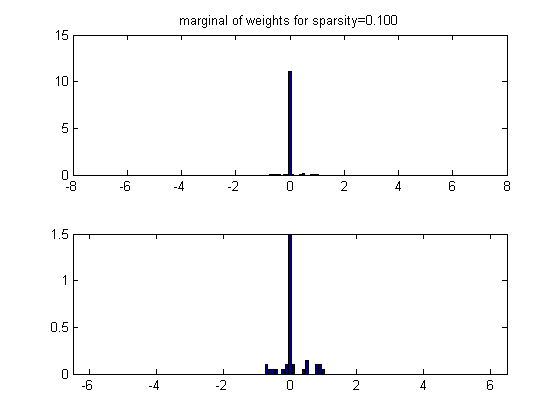
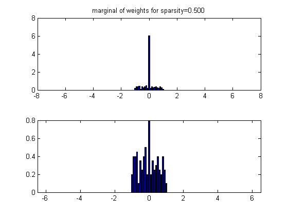
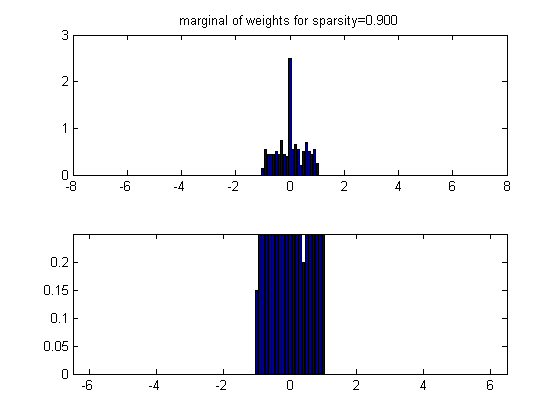

Compute empirical distribution of coefficients drawn from a Gaussian ensemble
Exactly k0 elements are non-zero. The resulting marginal is a good prior for the weights in a sparse linear regression model
Based on code by Baback Moghaddam
if ~exist('n','var'), n=12; end % n = dimension of x (#cols of A) if ~exist('m','var'), m=10*n; end % m = dimension of y (#rows of A) if ~exist('nCases','var'), nCases = 20; end % nCases = no. of MC trials xr = [-6.5:0.1:6.5]; % discretized x range sparsities = [0.1 0.5 0.9]; for sparsity=sparsities(:)' k0 = fix(sparsity*n); % Generate a bunch of random sparse weight vectors for c = 1:nCases % ------------------------------------- MC loop %x0 = randn(n,1); % Gaussian x x0 = unifrndPMTK(-1,1,n,1); %x0 = 3*(2*rand(n,1)-1); % Uniform x %x0 = sign(randn(n,1)); % Binary x idx = randperm(n); x0(idx(1:n-k0)) = 0; trueWeights(:,c) = x0; end % ---------------------------------------------- end MC loop Pw = zeros(1,length(xr)); for i = 1:nCases h = hist(trueWeights(:,i),xr); Pw = Pw + h/nCases; end figure; subplot(2,1,1); bar(xr, Pw); title(sprintf('marginal of weights for sparsity=%5.3f', sparsity)) subplot(2,1,2); bar(xr, Pw); ylim = get(gca, 'ylim'); axis([min(xr) max(xr) 0 ylim(2)*0.1]) end % for sparsity  